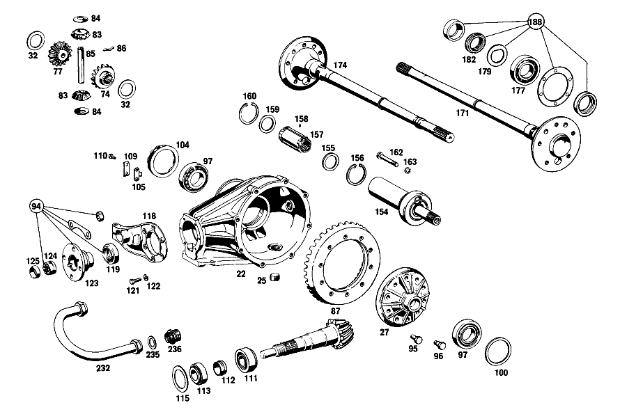

| № | Артикул | Название | Кол. | Примечание |
|---|---|---|---|---|
| 22 | A 112 350 02 20 | КАРТЕР МОСТА | 1 | КОРОБКА ДИФФЕРЕНЦИАЛА |
| 25 | A 186 997 00 32 | - ЗАГЛУШКА РЕЗЬБОВАЯ | 2 | M24X1,5 |
| 27 | A 109 350 06 23 | Дифференциал | 1 | ДИФФЕРЕНЦИАЛ С БЛОКИРОВКОЙ |
| 74 | A 109 353 00 15 | - ШЕСТЕРНЯ ПОЛУОСИ | 1 | СЛЕВА |
| 77 | A 109 350 00 40 | - ВЕДУЩ.КОН.ШЕСТЕРНЯ | 1 | СПРАВА |
| 83 | A 116 353 02 14 | - ВЕДУЩ.КОН.ШЕСТЕРНЯ | - | |
| 83 | A 140 353 05 14 | - Сателлит дифференциала | 2 | 10 |
| 84 | A 112 353 01 24 | - Сферическая шайба | 2 | |
| 85 | A 108 353 00 21 | - Палец | 1 | |
| 86 | A 112 993 00 20 | - ПРУЖИНА | 1 | |
| 87 | A 111 350 08 39 | Комплект колес | 1 | с RING GEAR 1:3.92 |
| 94 | A 108 586 01 35 | ремкомплект | 1 | ПРИВОДН. КОНИЧ. ШЕСТЕРНЯ |
| 95 | A 128 990 00 01 | болт | 10 | |
| 95 | A 128 990 00 01 | болт | 8 | |
| 96 | A 109 357 00 71 | БОЛТ | 2 | |
| 97 | A 000 980 19 02 | Кон. роликоподшипник | 2 | |
| 100 | A 112 353 08 52 | Компенсационная шайба | 1 | 1.8 MM AS REQUIRED |
| 104 | A 112 353 01 25 | Резьбовое кольцо | 1 | |
| 105 | A 180 353 01 73 | ПРЕДОХРАНИТЕЛЬ | 1 | |
| 109 | A 180 994 00 30 | Стопорная шайба | 1 | |
| 110 | N 000933 006103 | Винт | - | |
| 110 | N 304017 006018 | Винт с 6-гранной головкой | 2 | M6X12 |
| 111 | A 000 980 10 02 | Конический подшипник | 1 | |
| 112 | A 108 353 00 42 | Распорная втулка | 1 | |
| 113 | A 000 980 18 02 | Конический подшипник | 1 | |
| 115 | A 112 353 14 52 | Компенсационная шайба | 1 | 1.50 MM AS REQUIRED |
| 118 | A 110 353 03 08 | КРЫШКА | 1 | |
| 119 | A 004 997 56 46 | Уплотнительное кольцо | 1 | |
| 121 | N 304017 008023 | Винт с 6-гранной головкой | 6 | M8X20\-10.9 |
| 122 | N 000127 008203 | Пружинное кольцо | 6 | |
| 123 | A 110 350 01 45 | Фланец | 1 | |
| 124 | A 111 350 01 66 | Шлицевая гайка | 1 | |
| 125 | A 111 994 02 44 | предохранитель | 1 | |
| 126 | A 109 350 00 19 | ТРУБА НЕСУЩАЯ | 1 | СЛЕВА |
| 130 | A 109 350 01 19 | ТРУБА НЕСУЩАЯ | 1 | СПРАВА |
| 140 | A 180 351 04 50 | - ВТУЛКА | 2 | |
| 142 | A 115 350 02 90 | Воздушный клапан | 1 | |
| 146 | A 108 351 00 68 | КОЛПАЧОК | 1 | |
| 154 | A 109 350 06 13 | ШАРНИР ШАРОВОЙ | 1 | HOMOKINETIC |
| 155 | A 180 357 01 52 | - Диск | 1 | |
| 156 | A 000 994 29 41 | - Стопорное кольцо | 1 | |
| 157 | A 108 350 00 48 | - Скользящая муфта | 1 | |
| 158 | A 180 981 00 86 | - Ролик | 114 | |
| 159 | A 188 357 00 52 | - Диск | 1 | |
| 160 | A 094 990 71 05 | - Стопорное кольцо | 1 | |
| 162 | N 000931 010388 | Винт | 1 | |
| 163 | N 000127 010202 | Пружинное кольцо | 1 | |
| 165 | A 110 357 04 91 | Манжета | 1 | |
| 168 | A 110 357 03 91 | Манжета | 1 | РЕМОНТ. ИСПОЛНЕНИЕ |
| 169 | A 002 988 10 78 | Скоба | 9 | РЕМОНТ. ИСПОЛНЕНИЕ |
| 171 | A 108 350 03 10 | Полуось заднего моста | 1 | СЛЕВА |
| 174 | A 108 350 07 10 | Полуось заднего моста | 1 | СПРАВА |
| 177 | A 000 981 05 06 | Роликоподшипник | 2 | |
| 179 | A 183 353 03 73 | предохранитель | 2 | |
| 182 | A 153 357 00 26 | Шлицевая гайка | 2 | |
| 183 | N 000933 010164 | Винт | 8 | |
| 186 | A 126 423 00 12 | Тормозной диск | 2 | |
| 188 | A 111 350 00 68 | Ремк-т полуоси зад. моста | 2 | УПЛОТНЕНИЕ ПОЛУОСИ ЗАДНЕГО МОСТА |
| 189 | A 110 351 00 74 | Палец | 1 | |
| 190 | A 180 351 01 53 | Проставочная втулка | 2 | 26.0 MM AS REQUIRED |
| 192 | A 180 351 14 52 | Компенсационная шайба | 2 | для REAR AXLE TUBE OUTSIDE EYE 2.0 MM |
| 193 | A 180 351 13 52 | Центрирующее кольцо | - | |
| 193 | A 180 351 14 52 | Компенсационная шайба | 2 | для REAR AXLE TUBE OUTSIDE EYE 1.9 MM AS REQUIRED |
| 198 | A 180 351 03 51 | Проставочное кольцо | 2 | |
| 199 | A 180 351 09 86 | Резиновое кольцо | 4 | |
| 201 | A 180 351 00 74 | Клин | 1 | |
| 204 | N 000127 008203 | Пружинное кольцо | 1 | |
| 206 | N 000934 008013 | Гайка | 1 | |
| 208 | A 180 994 03 41 | Стопорное кольцо | 1 | |
| 209 | N 000443 020000 | Запорная крышка | 1 | |
| 211 | A 180 997 04 30 | Резьбовая пробка | 1 | |
| 214 | A 180 994 01 12 | Стопорная шайба | 1 | |
| 216 | N 071412 006100 | Пресс-масленка | 1 | IN REAR EYE |
| 218 | N 071412 006200 | Пресс-масленка | 1 | IN FRONT EYE 20.5 MM |
| 221 | A 110 350 12 75 | Резиновая опора | 1 | |
| 223 | A 109 350 00 32 | Кронштейн | 1 | |
| 225 | N 001473 003001 | - Просечной штифт | 1 | |
| 228 | N 070614 010018 | Винт | 3 | |
| 230 | N 000127 010202 | Пружинное кольцо | 3 | |
| 238 | A 112 350 20 29 | НИЖН. ПРОДОЛЬН. ШТАНГА | 1 | СЛЕВА |
| 239 | A 109 586 00 35 | РЕМКОМПЛЕКТ | 1 | НИЖН. ПРОДОЛЬН. ШТАНГА |
| 242 | A 110 352 17 65 | САЙЛЕНТ-БЛОК | 2 | |
| 244 | A 111 352 01 73 | Стопорная шайба | 4 | |
| 247 | A 111 352 01 71 | болт | 4 | |
| 247 | A 111 352 03 71 | БОЛТ | 4 | |
| 252 | A 112 350 04 75 | САЙЛЕНТ-БЛОК | 1 | |
| 256 | A 112 351 02 45 | ПОДКЛАДКА | 1 | |
| 258 | N 000961 016004 | Винт | 1 | |
| 260 | N 912004 016101 | Пружинное кольцо | 1 | |
| 262 | N 000933 010016 | Винт | 4 | |
| 265 | N 000127 010202 | Пружинное кольцо | 4 | |
| 270 | A 110 350 04 93 | Поперечная распорка | 1 | |
| 273 | N 000936 014008 | Гайка | 1 | |
| 274 | A 111 351 03 40 | ДЕРЖАТЕЛЬ | 1 | |
| 278 | A 111 351 04 48 | Резиновая опора | 2 | |
| 279 | A 111 351 02 40 | Язычок | 1 | |
| 281 | N 000933 010106 | Винт | 1 | |
| 284 | N 000137 010201 | Пружинная шайба | 1 | |
| 285 | N 000960 012163 | БОЛТ | 1 | |
| 286 | N 000137 012203 | Пружинная шайба | - | |
| 286 | A 094 990 42 05 | Пружинная шайба | 1 | |
| 288 | A 111 351 04 44 | Резиновое кольцо | 2 | |
| 289 | A 110 351 07 43 | Чашка | 1 | |
| 292 | A 110 351 06 43 | Чашка | 1 | |
| 295 | N 000934 012023 | Гайка | - | |
| 295 | N 308673 012002 | Шестигранная гайка | 1 | |
| 297 | N 007967 012000 | Гайка | 1 | |
| 299 | A 110 352 10 65 | Резиновая опора | 2 | |
| 302 | A 110 352 00 42 | Крепежная пластина | 2 | |
| 304 | A 108 990 03 40 | Диск | 2 | MOUNTING PLATES TO FRAME FLOOR UNIT |
| 306 | N 000127 008203 | Пружинное кольцо | 6 | MOUNTING PLATES TO FRAME FLOOR UNIT |
| 307 | N 000934 008013 | Гайка | 6 | MOUNTING PLATES TO FRAME FLOOR UNIT |
| 310 | N 912004 014100 | Пружинное кольцо | 2 | |
| 315 | N 000934 014019 | Гайка | - | |
| 315 | N 308673 014001 | Шестигранная гайка | 2 | M14X1.5 |
| A 112 350 27 00 | ЗАДНИЙ МОСТ | - | ||
| A 112 350 06 03 | КАРТЕР МОСТА | 1 | с LIMITED\-SLIP DIFFERENTIAL RATIO 1:3.69 | |
| A 112 350 29 00 | ЗАДНИЙ МОСТ | - | с LIMITED\-SLIP DIFFERENTIAL, RATIO 1:3.92 | |
| A 112 350 28 00 | ЗАДНИЙ МОСТ | 1 | с LIMITED\-SLIP DIFFERENTIAL, RATIO 1:4.08 | |
| A 112 350 07 03 | КАРТЕР МОСТА | 1 | HALF с DIFFERENTIAL, RATIO 1:3.92 | |
| A 112 350 06 03 | КАРТЕР МОСТА | 1 | HALF с DIFFERENTIAL, RATIO 1:3.69 | |
| A 112 350 05 03 | КАРТЕР МОСТА | 1 | HALF с DIFFERENTIAL, RATIO 1:4.08 | |
| A 108 353 01 48 | Кольцо | 1 | REPAIR SIZE 0.5 MM OVERSIZE | |
| A 129 353 09 62 | Прижимная шайба | NB | 2.9 MM AS REQUIRED | |
| A 129 353 10 62 | Прижимная шайба | NB | 2.8 MM AS REQUIRED | |
| A 129 353 08 62 | Прижимная шайба | NB | 3 MM AS REQUIRED | |
| A 129 353 07 62 | Прижимная шайба | NB | 3.1 MM AS REQUIRED | |
| A 129 353 06 62 | Прижимная шайба | NB | 3.2 MM AS REQUIRED | |
| A 129 353 05 62 | Прижимная шайба | NB | 3.3 MM AS REQUIRED | |
| A 129 353 04 62 | Прижимная шайба | NB | 3.4 MM AS REQUIRED | |
| A 129 353 03 62 | Прижимная шайба | NB | 3.5 MM AS REQUIRED | |
| A 129 353 02 62 | Прижимная шайба | NB | 3.6 MM AS REQUIRED | |
| A 109 353 01 62 | - ШАЙБА УПОРНАЯ | - | ||
| A 109 353 20 62 | - ШАЙБА УПОРНАЯ | - | с MOLYBDENUM LINING | |
| A 129 353 11 62 | Прижимная шайба | NB | ||
| A 112 353 06 62 | Фрикционная шайба | 10 | ||
| A 116 353 02 14 | - ВЕДУЩ.КОН.ШЕСТЕРНЯ | - | ||
| A 140 353 05 14 | - Сателлит дифференциала | - | ||
| A 108 350 00 39 | РЯД ШЕСТЕРЕН | 1 | с RING GEAR 1:4.08 | |
| A 112 353 09 52 | Компенсационная шайба | 1 | 1.9 MM AS REQUIRED | |
| A 112 353 10 52 | Компенсационная шайба | 1 | 2.0 MM AS REQUIRED | |
| A 112 353 11 52 | Компенсационная шайба | 1 | 2.1 MM AS REQUIRED | |
| A 112 353 12 52 | Торцевое уплотнение | - | ||
| A 112 353 11 52 | Компенсационная шайба | 1 | 2.2 MM AS REQUIRED | |
| A 180 353 02 73 | ПРЕДОХРАНИТЕЛЬ | 1 | ||
| A 180 353 03 73 | ПРЕДОХРАНИТЕЛЬ | 1 | ||
| A 180 353 05 73 | предохранитель | 1 | ||
| A 180 353 06 73 | ПРЕДОХРАНИТЕЛЬ | 1 | ||
| A 000 980 05 02 | КОНИЧ. РОЛИКОПОДШИПНИК | 1 | ||
| A 000 980 52 02 | КОНИЧ. РОЛИКОПОДШИПНИК | 1 | ||
| A 112 353 16 52 | РАСПОРНАЯ ШАЙБА | 1 | 1.60 MM AS REQUIRED | |
| A 112 353 18 52 | РАСПОРНАЯ ШАЙБА | 1 | 1.70 MM AS REQUIRED | |
| A 112 353 20 52 | Компенсационная шайба | 1 | 1.80 MM AS REQUIRED | |
| A 005 997 41 46 | УПЛОТНИТ. КОЛЬЦО | 1 | ||
| N 000933 010090 | Винт | 8 | ||
| A 112 350 02 13 | ШАРНИР ШАРОВОЙ | 1 | SLIP UNIVERSAL | |
| A 108 350 00 48 | - Скользящая муфта | 1 | ||
| A 112 350 00 28 | - ШАРНИР КАРДАННЫЙ | 1 | ||
| A 186 994 12 35 | - Пруж. стопорное кольцо | 4 | 2.15 MM | |
| A 186 994 04 35 | - СТОПОРН. КОЛЬЦО | 4 | 2.25 MM | |
| A 186 994 15 35 | - СТОПОРН. КОЛЬЦО | 4 | 2.35 MM | |
| A 186 994 17 35 | - СТОПОРН. КОЛЬЦО | 4 | 2.45 MM | |
| A 186 994 19 35 | - СТОПОРН. КОЛЬЦО | 4 | 2.55 MM | |
| A 112 357 03 50 | - ВТУЛКА | 4 | ||
| A 109 357 01 50 | ВТУЛКА | 1 | ||
| N 000912 010053 | БОЛТ | 1 | ||
| A 108 994 00 35 | - СТОПОРН. КОЛЬЦО | 1 | ПОЛУОСЬ ЗАДНЕГО МОСТА (ПРАВАЯ) | |
| A 115 991 05 60 | - Цилиндрический шрифт | 2 | ||
| N 900288 088003 | Хомут | 1 | ТРУБА НЕСУЩАЯ | |
| N 900288 121000 | Хомут | 1 | КАРТЕР ЗАДНЕГО МОСТА | |
| A 180 351 18 53 | Проставочная втулка | 2 | 25.8 MM AS REQUIRED | |
| A 180 351 17 53 | Проставочная втулка | 2 | 25.6 MM AS REQUIRED | |
| A 180 351 16 53 | Проставочная втулка | 2 | 25.4 MM AS REQUIRED | |
| A 180 351 15 53 | РАСПОРН. ТРУБКА | - | ||
| A 180 351 16 53 | Проставочная втулка | 2 | 25.2 MM AS REQUIRED | |
| A 180 351 14 53 | Проставочная втулка | 2 | 25.0 MM AS REQUIRED | |
| A 180 351 14 52 | Компенсационная шайба | 2 | для REAR AXLE TUBE OUTSIDE EYE 2.0 MM AS REQUIRED | |
| A 180 351 15 52 | Дистанционная шайба | 2 | для REAR AXLE TUBE OUTSIDE EYE 2.1 MM AS REQUIRED | |
| A 180 351 16 52 | Компенсационная шайба | 2 | для REAR AXLE TUBE OUTSIDE EYE 2.2 MM AS REQUIRED | |
| A 180 351 17 52 | Компенсационная шайба | 2 | REAR AXLE TUBE OUTSIDE EYE 2.3 MM AS REQUIRED | |
| A 180 351 18 52 | Компенсационная шайба | 2 | REAR AXLE TUBE OUTSIDE EYE 2.4 MM AS REQUIRED | |
| A 180 351 19 52 | Компенсационная шайба | 2 | REAR AXLE TUBE OUTSIDE EYE 2.5 MM AS REQUIRED | |
| A 180 351 27 52 | Компенсационная шайба | 2 | REAR AXLE TUBE OUTSIDE EYE 2.6 MM AS REQUIRED | |
| A 180 351 28 52 | Компенсационная шайба | 2 | REAR AXLE TUBE OUTSIDE EYE 2.7 MM AS REQUIRED | |
| A 180 351 29 52 | Центрирующее кольцо | - | ||
| A 180 351 30 52 | Компенсационная шайба | 2 | REAR AXLE TUBE OUTSIDE EYE 2.8 MM AS REQUIRED | |
| A 180 351 30 52 | Компенсационная шайба | 2 | REAR AXLE TUBE OUTSIDE EYE 2.9 MM AS REQUIRED | |
| A 180 351 20 52 | Компенсационная шайба | 2 | REAR AXLE TUBE OUTSIDE EYE 3.0 MM AS REQUIRED | |
| A 180 351 31 52 | Компенсационная шайба | 2 | REAR AXLE TUBE OUTSIDE EYE 3.1 MM AS REQUIRED | |
| A 180 351 32 52 | Центрирующее кольцо | - | ||
| A 180 351 31 52 | Компенсационная шайба | 2 | REAR AXLE TUBE OUTSIDE EYE 3.2 MM AS REQUIRED | |
| A 112 350 21 29 | НИЖН. ПРОДОЛЬН. ШТАНГА | 1 | СПРАВА | |
| N 000933 008108 | Винт | 4 | MOUNTING PLATES TO FRAME FLOOR UNIT | |
| N 000125 008407 | ШАЙБА | 8 | MOUNTING PLATES TO FRAME FLOOR UNIT |
Позиций: 194 · подписано на схемах: 115 · колесо — плавный зум в курсор, перетаскивание — пан, двойной клик — зум, клик по артикулу — скопировать.